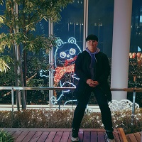

Home
About Me
Skills
Projects
RoadMap
History

누구나 할 수 있지만 아무나 못 할 일을 할 개발자, 최정우 입니다.
About Me
Introduction
반갑습니다. 신입 프론트 개발자 최정우입니다.
센스 있는 사람이 되고싶었는데 개발자가 딱 센스 있는 직업이었습니다.
열심히 할 필요 없다. 그냥 하면 된다.
이유가 없는 건 없다. 사소한 것에도 관심을 갖자.
팀 내 문화는 개개인의 능력만큼이나 중요하다.
Contact Me
E-mail | choi-ju12g@naver.com
Github | https://github.com/Choi-Ju12g
Blog | https://https://velog.io/@choi-ju12g